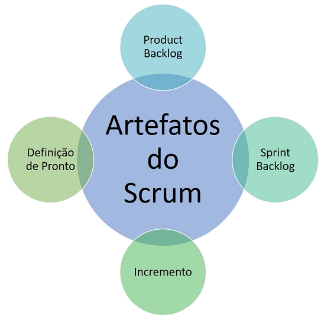
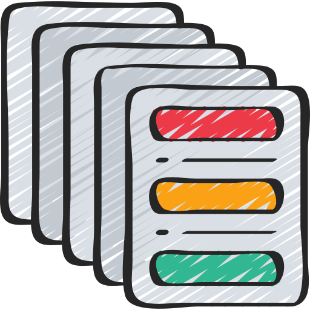

Artefatos do Scrum
O Incremento é o resultado do trabalho da equipe Scrum em uma Sprint e deve seguir a Definição de Pronto para se tornar utilizável. A Definição de Pronto garante a qualidade do Incremento e pode ser adaptada de acordo com as necessidades da equipe.
Backlog do produto (Product Backlog)
O Product Backlog é um conjunto de requisitos para desenvolver um produto, atualizado conforme a demanda do cliente, e gerenciado pelo Product Owner em colaboração com o Scrum Team.
O que é Sprint Backlog?
É uma lista de atividades a serem realizadas durante o Sprint e é construído a partir do Product Backlog, que contém todas as funcionalidades necessárias para o produto. A equipe alinha as prioridades junto ao Product Owner e a percepção de tempo que cada etapa vai consumir.

O que é Burndown?
É um grafico que usa as estimativas de esforço(tempo) feitas para as atividades do Sprint Backlog , por ele pode ser feito o acompanhamento da produtividade no dia a dia.
Ele consiste basicamente disso:
- 1- O eixo Y (vertical) é o somatório das estimativas de esforço do Sprint;
- 2- No eixo (x) é o somatório dos dias trabalhados;
- 3- É traçada uma linha reta ligando os dois pontos que representa a meta diária de avanço;
- 4- Dia a dia verifica-se com a equipe as atividades que estão prontas e se marca no gráfico a quantidade de esforço restante até o fim;
- 5- A meta é chegar a zero no final do Sprint.